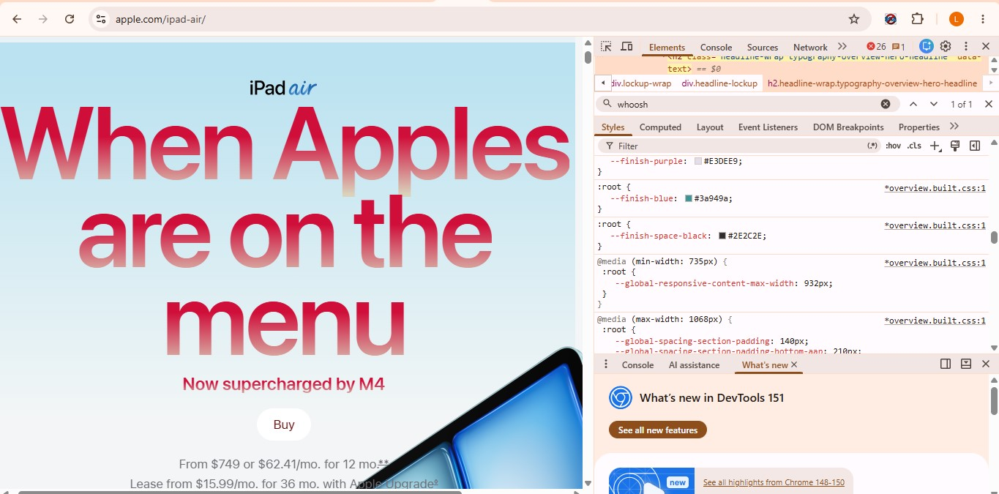

My Dev Tools Vandalism
I used browser developer tools to temporarily "vandalize" Apple.com. Below is a screenshot showing my changes. These edits only appeared on my computer and did not affect the actual website.

What I "Vandalized" on Apple.com
I edited Apple's page for their iPad Air product by changing their original header from "Whoosh" to something fun and playful. I also changed this page's CSS styling. First, I made the color fade of my new header red to match the play on words. Second, I changed the background and text color of the "Buy Now" button. Because I was enjoying this execise so much, I decided to change the placement and size of the iPad Air image in HTML.
This exercise was very fun and gave me a better sense of how developer tools can help me edit and improve my own webpage. It was interesting to see what changes worked and didn't. After researching the "whys" behind attempts that weren't successful, I was able to understand what I had done wrong.